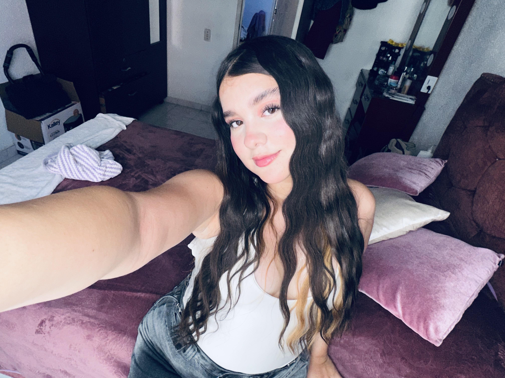

BIENVENIDO A MI PORTAFOLIO
Este es un espacio donde comparto un poco sobre mí, mis gustos, mis metas y lo que quiero lograr en mi futuro.
Conóceme
CONOCE MÁS
Mi nombre es Sara Romero. Soy una estudiante que está terminando su etapa escolar y que tiene muchos sueños y metas para su futuro.
Me considero una persona con ganas de aprender, mejorar cada día y trabajar por aquello que quiero conseguir.
Soy una persona con carácter, pero también me gusta compartir con las personas que quiero y vivir nuevas experiencias.
Cuando tengo una meta, intento esforzarme para conseguirla y seguir avanzando.
UN POCO DE MÍ
El rosado es uno de mis colores favoritos porque me parece bonito y representa mucho mi estilo.
Me gusta escuchar música en diferentes momentos, especialmente cuando quiero relajarme o distraerme.
Mi familia es una parte importante de mi vida y una de mis principales motivaciones.
Me gustan los diseños bonitos, juveniles, delicados y con detalles que tengan personalidad.
MI PROYECTO DE VIDA
Una de mis principales metas es estudiar Enfermería. Me interesa esta profesión porque quiero aprender a cuidar y ayudar a las personas cuando más lo necesiten.
También me interesa especialmente el cuidado de los recién nacidos y poder trabajar algún día en un área relacionada con la atención de bebés.
Ver mis metasMI CAMINO
"Los sueños comienzan cuando decides trabajar por ellos."
— Sara Romero 💗HABLEMOS
Este proyecto representa una pequeña parte de quién soy y de lo que quiero conseguir en el futuro.
👩🏻 Sara Romero
🎓 Estudiante
🩺 Futura enfermera
🌎 Colombia